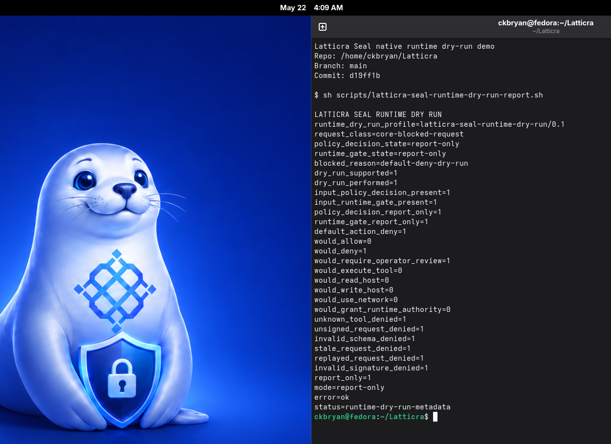

Early-stage evidence-bound systems architecture
Latticra
A contract-first architecture for making requests, capabilities, policy boundaries, runtime posture, and evidence records explicit before authority is granted.
- Status
- Early-stage foundation
- Runtime posture
- No-effect by default
- Status record
- May 25, 2026 CDT
Orientation
Built around claims that can be inspected.
Latticra treats architecture as an evidence trail. The repository separates contracts, metadata, reports, guard scripts, implementation slices, and non-claims so readers can see what exists now and what still requires proof.
What Latticra is
- An evidence-bound systems substrate for Linux-era and AI-era computing.
- A public engineering record for explicit authority, request, capability, and runtime boundaries.
- A collection of no-effect C, constrained C++, Rust installer, shell guard, and documentation lanes.
What Latticra does not claim
- No production runtime, hardened sandbox, certified security boundary, or operating-system replacement.
- No unrestricted command execution, network authority, root installer, or Fedora approval.
- No active AI-agent execution control or production cryptographic key authority.
Architecture
Named layers, conservative posture.
The current system emphasizes declaration, classification, metadata, and deterministic reports before operational behavior. Each lane has a role and a boundary.
Contract language direction
Parsing, validation, diagnostics, and metadata lowering for system declarations.
Bounded representation
Graph-shape and metadata reporting without LIR execution.
Operator-visible surface
Declaration and report rendering foundations before terminal-control behavior.
Task-boundary records
Coordination and task classification under report-only, denied-by-default posture.
Before operational behavior
Disabled-by-default classification and report surfaces before runtime authority.
Trust and tool boundaries
Request freshness, signed-request, policy-decision, capability-gate, and dry-run metadata.
Local workbench
User-local installer and evidence review path with no root and no network authority by default.
Validation lane
Disposable VM and local RPM evidence paths, not distribution readiness.
Evidence Path
Promotion requires more than intent.
Latticra uses a staged evidence model: define the boundary, produce deterministic records, keep effects denied, then promote only when tests and status records support the claim.
-
01
Contract
Name the capability, prerequisites, limits, and explicit non-claims.
-
02
Metadata
Represent the request, policy, capability, and report fields in bounded structures.
-
03
Guard
Run deterministic scripts and tests that preserve no-effect behavior.
-
04
Status
Record the exact posture so public entry points do not overstate readiness.
Latticra Seal
Report-only tool-boundary planning for AI-era automation.
Latticra Seal records what would be denied, why it would be denied, and which evidence supports the decision. Unknown tools, unsigned requests, stale requests, replayed requests, invalid schemas, and missing authority remain blocked cases.
report-only
default-deny
operator review

Start Locally
Read the status first, then run no-effect checks.
The repository is designed to be inspected from the public records outward. The commands below mirror the current no-effect posture rather than promising operational authority.
Read the public posture
sed -n '1,220p' STATUS.md
sed -n '1,260p' docs/status/CURRENT_STATUS.mdRun broad safety guards
make quality
make sealInspect the no-effect CLI
mkdir -p build
cc -std=c99 -Wall -Wextra -pedantic src/latticra_cli.c -o build/latticra
./build/latticra --statusResources
The important records, grouped for fast entry.
These links are the best first paths through the repository: general orientation, current status, foundation contracts, subsystem documentation, and safety policy.
Evidence
Claims and Evidence
The evidence ladder, promotion rules, non-claims, and source records.
First Run
Getting Started
A no-effect reader path for status review, local checks, and safe expectations.
Architecture
System Architecture
A guided view of layers, authority boundaries, evidence flow, and no-effect posture.
Status Dashboard
Public Status
A scannable dashboard for current estimates, posture, workstreams, and non-claims.
Navigation
Documentation Map
A guided path through status, contracts, architecture, subsystems, and local validation records.
Project Overview
Root README
Public identity, quick start, architecture map, and current non-claims.
Current State
Status
High-level project posture and completion estimate summary.
Detailed Status
Current Status
Detailed progress rollup, latest notes, and next-priority context.
Foundation
Foundation Index
Contracts, strategy records, implementation documents, and guard scripts.
Handbook
System Substrate
Main project book and substrate documentation entry point.
Subsystem
Latticra Seal
Verification, reporting, policy-boundary, and tool-boundary records.
Planning
Roadmap
Design-first path before deeper implementation claims.
Safety
Security Policy
Safe testing rules, vulnerability reporting, and security non-claims.